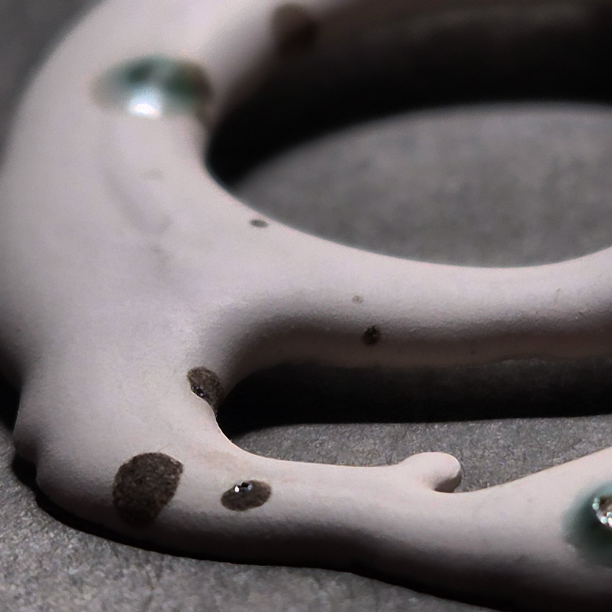
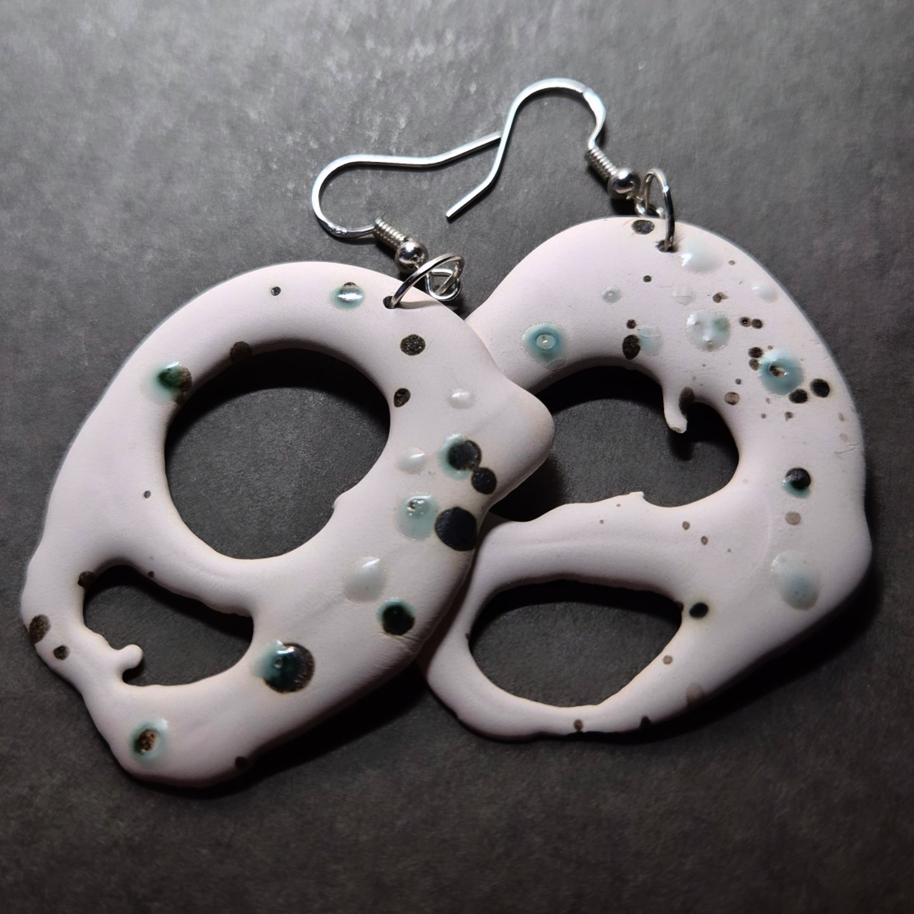
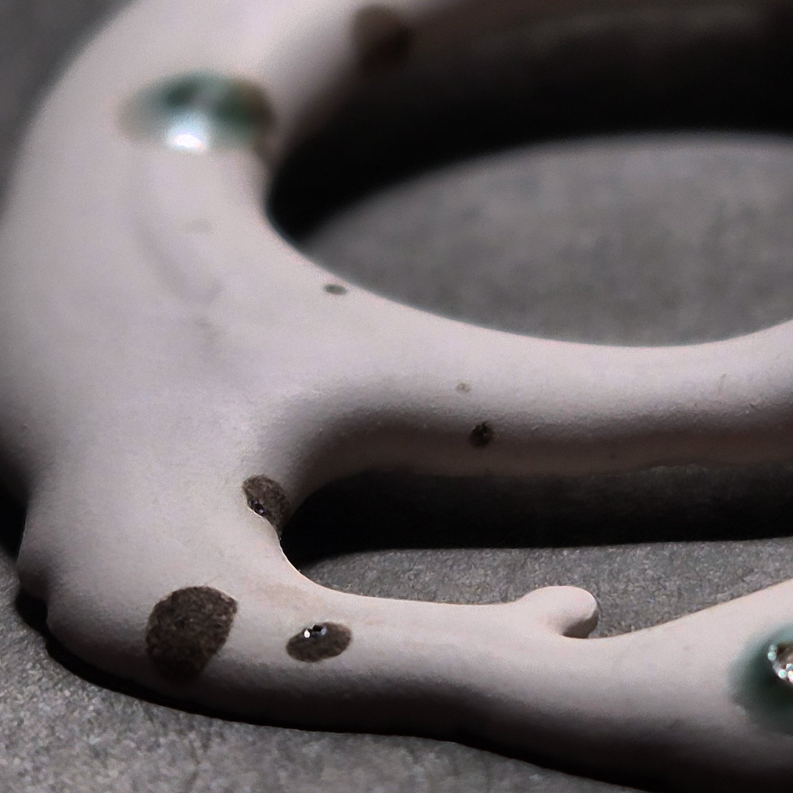
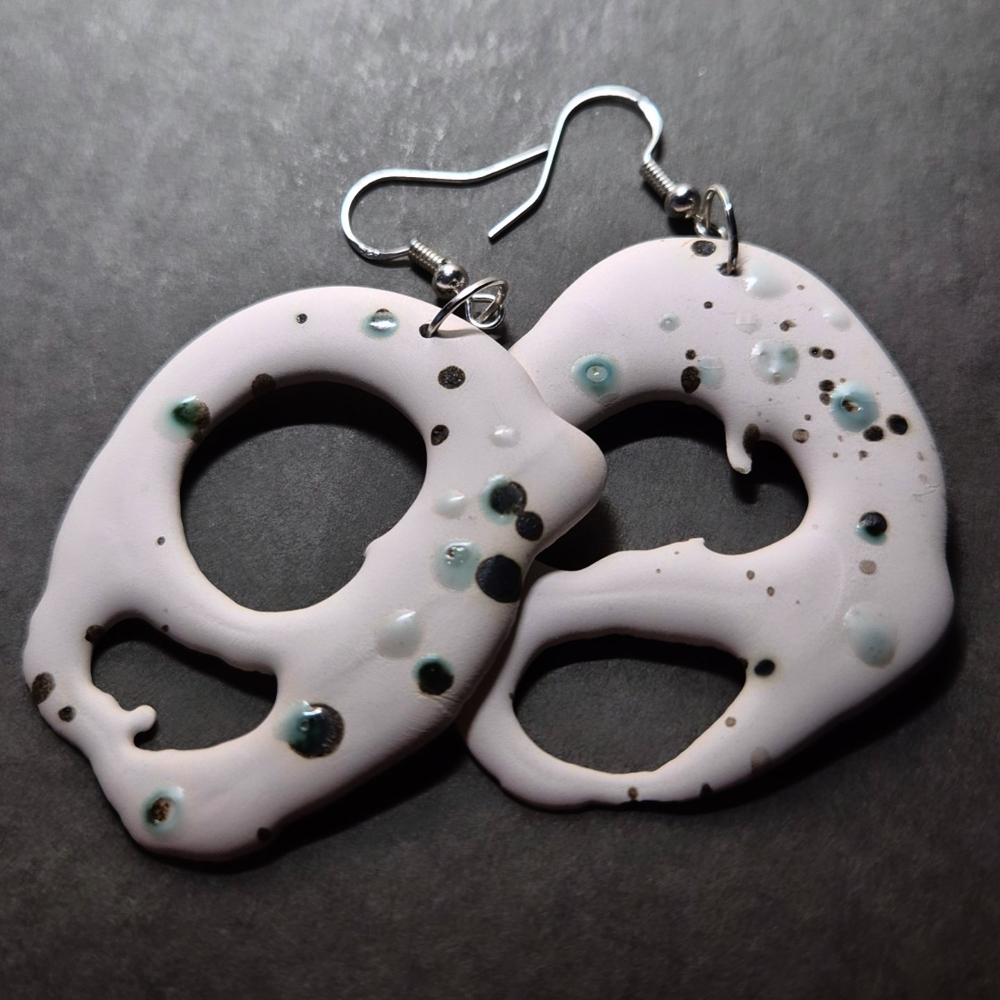

ECOS
Fiecare pereche din colecția „Ecos” este o interpretare a formelor organice din natură, un ecou al proceselor naturale surprins în porțelan. Cerceii sunt modelați manual, cu intenția de a păstra frumusețea imperfecțiunii și urmele gestului creator.
Detalii tehnice:
Material: porțelan alb, glazură cu accente verzi și gri
Agățătoare: argint 925
Greutate: foarte ușori și confortabili la purtare
Fiecare pereche este realizată manual și unicat
„Ecos” vorbește despre dialogul dintre natură și materie, despre urmele timpului și frumusețea formelor imperfecte.
 


